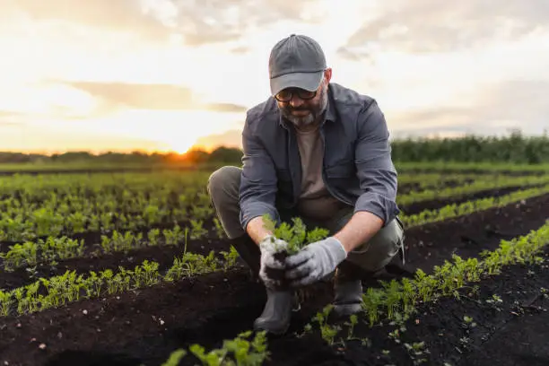

AgriAssist is your one-stop digital farming companion — built to support farmers with modern, AI-driven insights. Whether it’s predicting crop diseases, analyzing soil health, checking market prices, or tracking weather — AgriAssist makes smart farming simple and accessible for every farmer in India.
Our mission is to bridge the gap between traditional farming and modern technology by offering farmers tools that help increase yield, reduce risk, and improve profitability — all in their own language.


We aim to empower farmers with AI tools that predict diseases, recommend crops, and provide smart insights for sustainable farming.

Connecting farmers with experts and each other to share knowledge, get advice, and grow together.

Helping build a future where farming is both profitable and eco-friendly using data-driven solutions.


AgriAssist is a smart agriculture platform that offers real-time weather updates, soil advice, crop recommendations, pest detection, and market price insights.
Farmers can use AgriAssist via any web browser on their mobile or desktop, available in multiple Indian languages for easy understanding.
Currently, AgriAssist requires an internet connection to fetch live weather and market data. Offline support is under development.
AgriAssist uses trained AI models from the PlantVillage dataset, which offer high accuracy for major Indian crops like wheat, tomato, and potato.